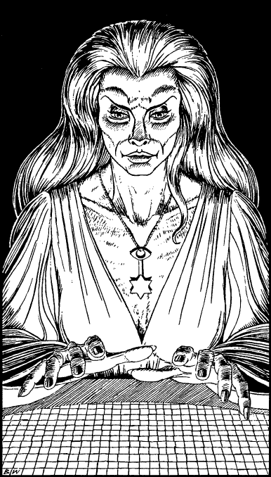

58
Cautiously you pass through the opening and follow Serocca into a tall, domed chamber that is supported by a circle of huge, rose-veined marble pillars. At its centre stands a large table and, from the ceiling directly above, a flood of light pours down, reflecting and refracting upon its crystal mosaic surface and bathing the chamber walls in spectral colours. She bids you take a seat at the table and, as she lowers herself elegantly into a seat opposite, you cannot but admire her beauty. Her face has the feline characteristics of a young lioness, yet her eyes and her youthful body are distinctly human, save for the soft, velvety nap which covers her flesh. She bears an aura that is powerful and confident, and yet at the same time she seems vulnerable and sad.

‘How do you know my name?’ you ask, slightly unnerved by the familiar way in which she welcomed you to her chamber.
‘There is much I know about you,’ she replies, veraciously, and at once you sense that you are in the presence of a god-like being. ‘Your land, and your fight against the forces of darkness who threaten to conquer it, are but a part of the struggle which rages throughout the Planes of Existence. Yet it is your world and your fight that has become the focus of this conflict between the powers of Good and Evil.’ She pauses, and then staring deeply into your eyes, she continues: ‘Upon you depends the future of us all.’
Stunned by the enormity of what she has said, you shake your head in open-mouthed silence: ‘No! How can this be?’ you breathe incredulously.
‘There are those who seek to shape destiny and those upon whom destiny falls. Destiny has chosen you, Lone Wolf, and you cannot refuse it, for it will force itself upon you.’
‘But how have I become the focus of such a struggle?’ you reply.
‘We are all a part of it,’ she says. ‘The worlds of Aon and the Daziarn are shaped by the actions of those who exist there. Yet the time has now come when the actions of one individual will shape the future of both worlds. You are that individual, Lone Wolf, and your actions are destined to shape the future of every living thing.’
‘But what if I refuse?’ you say, nervously. ‘What then will happen to the future?’
‘You cannot refuse,’ she says, softly. ‘For everything you do is bound up with your destiny. Your vow to complete the Magnakai quest and restore the Kai, will you give that up? Will you forsake your country and its future security? Will you abandon Magnamund to the evil of the Darklords? No, by your very nature—because of your honour and your courage—you will act out your part.’
‘What then must I do?’ you ask.
‘You must do what you have always done. You must listen to the words of those who will help you and you must let your skills and instincts be your guide.’ She leans forward and sweeps her hands slowly across the surface of the table. The light dims and patterns take shape among the tiny squares of crystal. ‘Observe and learn,’ she says. ‘For the images will impart knowledge that will aid your quest for the Lorestones of your ancestors.’